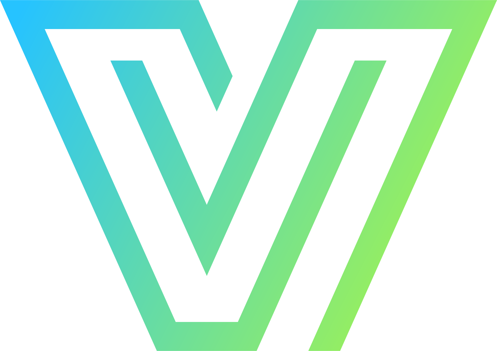

US macro event • 06.11
NFP USD
Відображає кількісне створення нових робочих місць, але тільки у несільськогосподарському секторі США. Дуже маніпулятивний показник.
Previous29K
Forecast65K
ActualPENDING

vikundey.cryptoВідображає кількісне створення нових робочих місць, але тільки у несільськогосподарському секторі США. Дуже маніпулятивний показник.
| Name | Previous | Forecast | Actual | Long / Short |
|---|---|---|---|---|
| IJC 1W | 199 | 200 | 197 | SHORT |
| IJC 2W | 198 | 200 | 199 | SHORT |
| IJC 3W | 200 | 200 | 194 | SHORT |
| IJC 4W | 195 | 199 | 194 | SHORT |
| ISM PMI Manufacturing | 54.5 | 54.6 | 55.5 | SHORT |
| ISM Manufacturing Employment | 52.7 | — | 52.4 | LONG |
| ISM Manufacturing New Orders | 55.3 | — | 55.5 | SHORT |
| Michigan Consumer Sentiment | 48.1 | 46.3 | 48 | SHORT |
| ISM Non-Manufacturing PMI | 54.9 | 54.8 | 54.5 | LONG |
| ISM Services Employment | 50.1 | — | 51.4 | SHORT |
| ISM Services New Orders | 59.8 | — | 55.9 | LONG |
| Previous NFP | 133 | 90 | 29 | LONG |
Почнемо із ринку праці, цього разу значення “заштопорились”, ніби в очікуванні чогось. Адже, по суті значних рухів не відбулось, і зараз ми їх розглянемо конкретно.
Щодо IJC, місяць закрили легким зниженням, це являється позитивом для долару, хоч і мінімальним. Я би це пояснила так, що хто шукав роботу — знайшов, новоприбулих немає — звільнень мало, тож потік нових безробітніх людей стає меншим.
Тепер візьмемо Challenger Job Cuts, ще один показник вказує на умовний штиль на ринку праці. Бо кричущих змін зниження/підвищення НЕ відбулось. Одним словом, люди зберігаються на своїх робочих місцях.
Узагальнюючи, хоч сильних змін не відбулось, але наявні мінімальні рухи ідентифіковую як позитивний фон на ринку праці, що підтримує зростання NFP.
Переходимо до бізнес-сфери:
Почнемо з сфери виробництва, загальний показник показав зростання, що свідчить про розвиток/зростання кондицій ділової активності. По новим замовленням отримали мінімальне зростання, яке більше говорить про їх стабільність, а не про новий приплив попиту. Говорячи про зайнятість, то є мінімальне зниження, скоріше це пішла як оптимізація бізнесу, тобто лишили ту кіл-сть, яка спокійно може обробити той попит, який зараз є.
Загально розуміємо, що є стабільність попиту та оптимізація робочої сили бізнесу, тож я би тут говорила за обмежений позитив для долару.
Щодо сфери послуг, тут ситуація трошки гірше, ніж у виробництва. Загальний показник дав зниження, але не значне, тому це НЕ критичний негатив для долару.
Говорячи про нові замовлення, маємо сильний відкат, а в зайнятості зростання — правда, звучить як нонсенс та не логічно. Але допускаю дві причини: 1 — lagging effect (тобто, нові дані затримуються і ринок їх не отримав); 2 — Labor Hoarding (простими словами, компанії свідомо утримують штат і схиляються до тимчасовості цього спаду попиту).
Я не можу тут сказати за сильний позитив — не будемо шукати того, чого немає. Проте, ситуація не виглядає печально, але все ж таки з негативом для долару.
Отже, факторів для сильного зростання NFP — немає, але й ситуація не печальна! Тому думаю, що побачимо помірне/легке зростання, через стабільність даних на ринку праці (сильних позитив/негатив рухів не було) + позаминулого місяця теж мали відносно сильні значення на ринку праці, тож думаю це згладить сьогоднішню цифру.
При відпрацюванні сценарію (легке зростання), по єврику очікую шортової реакції. Але не виключаю можливості хелікоптеру, як мінімум на фоні вчорашнього відкату :))
За день до виходу NFP, на ринку відбулась сильна корекція. Причина: заяви демократів щодо призупинення розвитку криптовалюти, ШІ та дата-центрів.